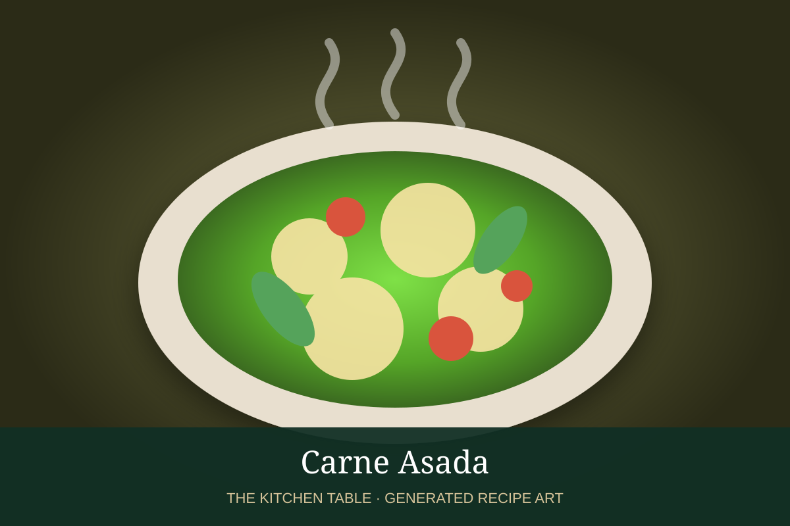

← Back to all recipes
BEEF · MEXICAN
Carne Asada
Citrus-garlic marinated grilled steak, charred over high heat and sliced thin for tacos or platters.
35 min + marinateServes 6

Photo: Unsplash
Ingredients
- 2 lb skirt, flank, or flap steak
- 1/3 cup orange juice
- 1/4 cup lime juice
- 3 tbsp olive oil
- 4 garlic cloves, minced
- 1 jalapeño, minced
- 1 tsp cumin
- 1 tsp oregano
- 1 1/2 tsp kosher salt
- 1/2 tsp black pepper
- Chopped cilantro and lime wedges
Preparation
- Whisk citrus juices, oil, garlic, jalapeño, cumin, oregano, salt, and pepper.
- Marinate steak 2 to 8 hours.
- Heat grill to very high heat and oil the grates.
- Grill steak until deeply charred and cooked to desired doneness, turning once.
- Rest 8 to 10 minutes.
- Slice thinly against the grain and serve with tortillas, lime, and salsa.